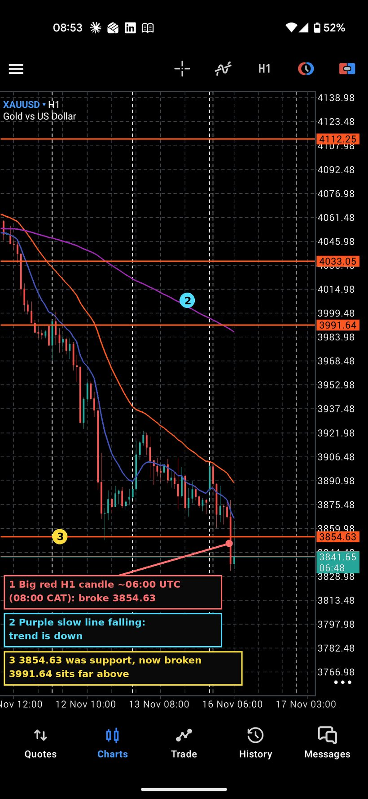
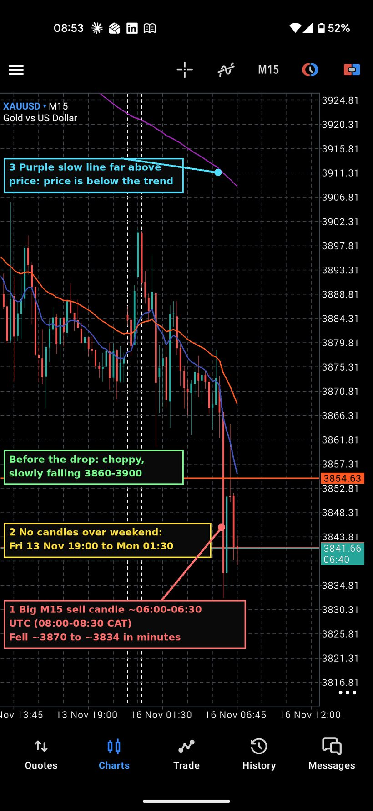

Gold session clock
MT5 server time on your charts is UTC. Zambia (CAT) is UTC+2. Gold is a real market: it closes at the weekend.
These session times are general market knowledge and use November clocks (UK on GMT, US on EST). When the UK and US switch to summer time the London and New York windows move one hour earlier in UTC. Check your broker's hours.
Hour-by-hour map
The highlighted row is the current UTC hour. The last column fills in from your own range log.
| UTC | CAT | Session | What usually matters | My avg range ($) |
|---|
Key times (CAT)
| CAT | UTC | Event | Why it matters |
|---|---|---|---|
| Sun 01:00 | Sat 23:00 | Weekly open | First prices after the weekend; compare with Friday's close for a gap |
| 10:00 | 08:00 | London open | Volume jumps; early moves can reverse |
| 12:30 | 10:30 | London gold price auction (AM) | A benchmark set by the London market |
| 15:00 to 18:30 | 13:00 to 16:30 | London / New York overlap | Highest activity of the day |
| 15:30 | 13:30 | US data (8:30 New York) | Jobs, CPI, retail sales; common source of sharp spikes. Check the calendar. |
| 17:00 | 15:00 | London gold price auction (PM) | Second benchmark; inside the overlap |
| 21:00 | 19:00 | FOMC statement (decision days only) | Can move gold sharply for hours |
| 23:00 | 21:00 | NY close and rollover | Spreads widen; avoid new entries |
| Fri ~00:00 Sat | Fri ~22:00 | Weekend close | Close or protect trades; Monday may gap |
Gold lot calculator
Lot size comes from the stop, not from a feeling. Check the contract size in MT5 (symbol specification) before you trust the default.
Lot = (balance x risk%) / (stop distance in dollars x dollars per 1.00 move per lot). Rounded down to 0.01. If the lot comes out below your broker's minimum, the stop is too wide for the account: skip the trade or use a smaller risk only on demo.
Pre-trade checks
Tick all of these before an entry. They reset when you press Reset.
Hourly range log
Open H1, tap a candle, copy its high and low. Hour is the candle's UTC hour (the time on your chart). Range = high minus low.
| Date | UTC hour | High | Low | Range ($) |
|---|
My busiest hours
Built only from the entries in your range log on this device. Fewer than 10 days per hour is a weak sample; treat it as a hint.
Case study: Monday 16 Nov morning drop
Charts taken at 08:53 CAT (06:53 UTC). The cause of the move was not found in reliable sources, so none is claimed here. The point is how the chart looked.


What the charts show
- Trend: on H1 the purple slow line is falling and price is far below it. Gold fell from about 4050 at the left edge of the chart to about 3840.
- Before the drop: on M15 price was choppy and slowly falling in the 3860 to 3900 range through the weekend close and Asia hours.
- The move: one large red candle around 06:00 to 06:30 UTC (08:00 to 08:30 CAT) went through 3854.63 and as low as about 3834. Last price 3841.65.
- Timing: it happened in the quiet Asia window. Quiet sessions can still produce sharp moves.
What a rule-based trader does (practice, not advice)
- Direction bias is down while price stays below the slow line.
- Chasing a sell after a candle this size means a wide stop and poor reward-to-risk.
- A retest of 3854.63 from below is a setup to watch, needing a rejection candle and a stop above the level. It may never happen.
- No clear setup means no trade.
The Gold guide
Sessions, hours and the top-down routine. Open the PDF
1. Why study gold by session and hour
Gold does not move evenly through the day: most of its range tends to arrive in a few windows, and learning those windows tells you when to trade and when to sit still. The session and hour patterns here are widely taught general patterns, not guarantees, and not measured from your own account.
- It gives you the session clock in UTC and in Zambia time (CAT, UTC+2), because MT5 server time on your charts is UTC.
- It lists the scheduled events that often move gold.
- It does not predict direction. The cause of Monday 16 Nov's morning drop was not found in reliable sources.
- Hourly averages need many days of data; the Hourly range log builds your own.
Gold is unlike Volatility 100. Vol 100 is a random synthetic index that trades 24/7 with no news. Gold closes for the weekend, gaps on Monday and reacts to news, so clock time matters.
2. The sessions: UTC and Zambia time
| Session | UTC | Zambia (CAT) | What it tends to do |
|---|---|---|---|
| Asia (Sydney, Tokyo) | 00:00 - 08:00 | 02:00 - 10:00 | Quieter, narrower range; often drifts or builds a range |
| London | 08:00 - 16:30 | 10:00 - 18:30 | Volume arrives; often sets early direction or a fake-out |
| London and New York overlap | 13:00 - 16:30 | 15:00 - 18:30 | Usually the widest range; US data lands here |
| New York | 13:00 - 21:00 | 15:00 - 23:00 | Strong first hours, then slows into the close |
| Late NY and rollover | 21:00 - 24:00 | 23:00 - 02:00 | Thin; spreads widen, so avoid entries |
| Weekend | Fri ~22:00 to Sun ~23:00 | Sat 00:00 to Mon 01:00 | Market closed; Monday can open with a gap |
One focused window, such as the overlap (15:00 to 18:30 CAT), may be all you need if you work a day shift.
3. Hour-by-hour key times
See the Hour map tab for the full table. Monday 16 Nov: a weekend break is visible on M15 between Friday's last candles (13 Nov, 19:00) and Monday's first (16 Nov, 01:30). A gap is not a signal on its own.
4. Case study
See the Case study tab: H1 and M15 annotated, with the rules a trader would apply.
5. Top-down routine for gold and risk math
- H4 and D1 map: mark levels price has reacted to at least twice, and note whether price is above or below the slow line.
- H1 direction: trade only with the slow line. Below it, look for sells only; above it, buys only.
- M15 or M30 trigger: wait for a break and retest or a rejection candle at a level, then put the stop beyond the level.
- Clock check: skip entries in the 30 minutes before and after US data (15:30 CAT) and FOMC (21:00 CAT on decision days). Skip the late NY rollover (23:00 to 02:00 CAT).
- Weekend: close or protect trades before Friday's close; a Monday gap can jump over a stop.
Example with an assumed 100 dollars of risk and a 5.00 dollar stop, at 100 dollars per 1.00 move per lot: 100 / (5 x 100) = 0.20 lot. Confirm the contract size in MT5 before using this. Gold moved about 30 dollars in one hour on 16 Nov, so a 5 dollar stop is only reasonable once a real level supports it, and a fast spike can still jump past it.
6. Measure it yourself
Record each hour's range (high minus low, in dollars) on H1 for 20 or more trading days, then average each hour. Your own numbers beat any general claim. Use the Hourly range log and My busiest hours tabs.
About this module
This Gold desk is separate from the Vol 100 desk. Entries you save here stay on this device only (browser storage), so clear-site-data erases them. Use Download CSV in the Hourly range log to keep a copy.
Educational practice material, not financial advice. Keep trading on a demo account until you are an adult and have a proven record.